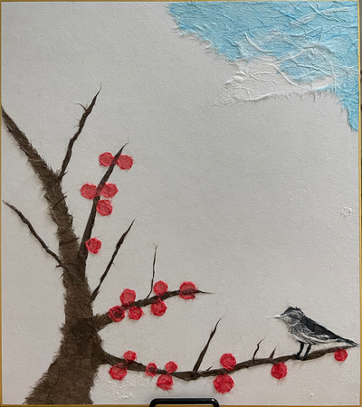
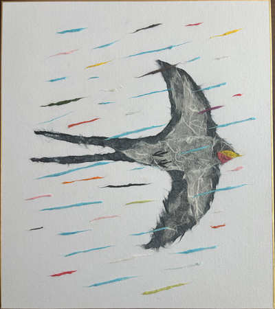
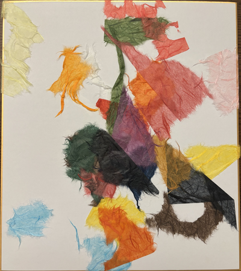
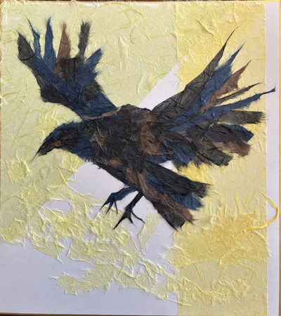

Portfolio
— データで事業を作る。 —
Kaito Masuda / 増田凱斗
Machine Learning Engineer & Scientist @ SceneLive
Data / Analytics / GTM Engineering
京大博士(農学)
—
1児の父。
目標
やりたいこと＝料理🍳・旅行✈️・芸術🎨・宇宙🚀
分解して考える:「インプット」と「アウトプット」
アウトプット＝ 少し背伸びしたアウトプットを決めることでインプットの幅が広がる。 直近はデータエンジニアリング・データサイエンス(統計/アナリティクス)・機械学習エンジニアリング(ML/LLM)・システム開発・チームビルディング。
2026の目標: 発信・アウトリーチ活動を増やす。月一目標。
Links


趣味
アート作品

梅と鶯

雨と燕

落ちる和紙

銀杏と烏
おすすめの本
エフェクチュエーション 優れた起業家が実践する「5つの原則」 著 吉田 満梨, 中村 龍太
熟達した起業家たちの意思決定における明確な5パターンの存在。
データエンジニアリングの基礎 ―データプロジェクトで失敗しないために 著 Joe Reis, Matt Housley, 翻訳 中田 秀基
「データエンジニアリングライフサイクル」からデータシステム構築の指針を与えます。
経歴・学歴
2025.10-2025.12: プロダクトマネジメント室
2026.01-: bq事業本部
新規事業の機械学習エンジニアとして参画。
ドメイン駆動開発(DDD)兼AI駆動開発(ADD)を主たる手法としたチームにて、
データ周り全般 (設計/インフラ調達/データ収集/ETL/特徴量エンジニアリング/
モデル構築・評価・デプロイ(ML/LLM)/モニタリング/分析/研究(research/(探索的データ分析)EDA)/技術検証も含む 等) を担当。
最初の2ヶ月でGoogle Cloudをインフラとしたプロダクトのデータ分析基盤を構築し、以降は運用フェーズに移行
(ツールはBigQuery/GCS/Cloud Run/dlt + dbt/elementary/Dagster (Airflowから載せ替え) 等。
dbtはerdやosmosisを利用し管理の省力化も。メダリオンアーキテクチャ・ディメンショナルモデリング(スタースキーマ)を実現。
Terraformでインフラ、GitHub ActionsやCircleCIでCI/CDを構築。Gemini CLIやCodexでのレビュー実装)。
Claude CodeやCodexでの開発、Skills・MCP の設定や利活用、git worktreeによる並列実装等、生成AIによる開発を経験。
担当領域のドメインとして、
機械学習では、MLOps実現のために、MLflowやevidentryを用いたモデル管理・デプロイ基盤の検証や設計。ADDとの親和性のために、
VScodeでのGoogle Colab extensionの接続等も挑戦中。
LLMでは、研究アジェンダとバックログを整理。Langfuseによるtracingと BigQuery 接続データセットを基盤に、「プロンプト → 評価 → 改善」の検証サイクルを
Claude Code + GitHub Actions で AI シームレスなアノテーションと LLMOps 改善フローとして実装。プロトタイプ・実験環境の構築・評価を実施
(プロンプトエンジニアリング・コンテキストエンジニアリング・実験管理)。
データ基盤に蓄積したデータを LLM で解析し、リバースETL でプロダクトに戻す仕組みを設計から運用まで一貫して構築。
営業・マーケティングデータを LLM が要約して Slack に自動通知する VoC 把握の仕組みも構築し、GTM エンジニアとしても活動。
その他、Slackへの使用量料金通知やデータ基盤の通知の構築。
ビジネスの要件整理の場においては、ML/LLMからの技術的な実現可能性の調査・提案も行っている。マーケティングデータや事業を進める上で必要なデータの
整理や利活用方法も伴走。
従来の BI ツールに依存せず、Claude Desktop 等でビジネスサイドが直接分析でき、Slack に表・数値・グラフ・LLMによる解釈までが一貫して流れる仕組みを実装。
AI ready なデータ基盤の構築に挑戦中。
データに関する要件定義からアーキテクチャ・スキーマ・データフロー設計、ビルド、デプロイ、運用(改修)まで一気通貫で対応している。
[データエンジニアリング/データサイエンス/機械学習エンジニアリングを実践]。
2022.04-: 江崎グリコ株式会社
2025.01-2025.09: デジタル推進部カスタマーリレーションズグループアナリティクスチーム
2024.01-2024.12: デジタル推進部カスタマーリレーションズグループCDPチーム
2023.11-2023.12: デジタル推進部デジタルコミュニケーショングループCDP/エコシステムチーム
2022.12-2023.10: デジタル推進部デジタルコミュニケーショングループwithGlicoチーム
2022.06-2022.11: 経営企画部デジタル化推進チーム
入社後、ウェアラブルデバイスで計測した人間の睡眠・心拍に関するテーブルデータを用いて、
機械学習による予測モデル構築 (Python)、アンケートとの相関調査、試験設計までを担当
[経営企画/新規事業/データサイエンスを経験]。
デジタル推進部発足後、会員サイト/ECサイトのCDP
(カスタマーデータプラットフォーム) 分析 (SQL/Python) と企画
(ゴール/KGI/CSF/KPI策定・データから施策/コンテンツの実施・レビュー・改善:
相関、時系列解析、ワードクラウド等自然言語処理・データ取得&見える化のためのGTMやGA4活用) を担当。
Treasure DataとTableauによる見える化も行い、
データドリブンを推進するための伴走を行っている
[Web・デジタルマーケティング/マーケティングリサーチ・分析/データアナリシス/
ビジネスアナリシス/データサイエンスを経験]。
直近では会員データ可視化・AI/ML構築&運用PJに技術リードとして参画。
コンポーネントCDP (snowflake + dbt) リプレイスPJのメンバーとして、
要件整理・技術選定・インフラ(AWS)構築・社内ルール整備を担当。
社内大型プロジェクトにて、IDPOSデータを対象としたデータスクレイピング&データ統合・可視化BIツールシステムの開発・運用経験
(要件定義/システム構成図の作成/Terraform (IaC)
でAWSのECSサーバレスシステム基盤構築/
データフロー図作成/ER図での第三正規形まで行ったデータベース設計/OSS
(Metabase) を利用したSQLでの
データダッシュボードプロトタイプを作成/PythonによるAWS
Athena+S3でのデータ取得・スクレイピング/AWS SagemakerやオンプレミスサーバーでMLFlowを用いた機械学習基盤の構築と実施&MLOps/
GitHubでCICD設計/Dockerでのローカル環境開発)
[データシステムアーキテクト/ビジネスシステムアーキテクト/データベースエンジニア/データサイエンス/データアナリティクス/プロジェクトリーダーを経験]。
プロジェクトリーダー兼技術担当として、分析設計からシステム開発、運用保守まで一貫して担当し、社内の分析業務効率化に貢献。
技術的な面だけではなく、「どうやったらチームで成果を上げやすいのか」や「効率化する方法はないか」を
模索し、アンケートフォームによる作業の効率化やドキュメント管理ツールの導入・普及も実施。
2025.05.23: 京都大学大学院農学研究科 地域環境科学専攻 論文博士(農学)取得
2020.04-2022.03: 京都大学大学院農学研究科 地域環境科学専攻 修了
学部に引き続き、人工光型植物工場の研究をするために 同じ研究室に。修士課程と社会人でのデータ分析や知見の下、研究を続けて、3本の英語論文 (Full paper) を出版 (業績参照)。国際学会の英語論文も1本アクセプト されていたが、COVID-19の影響で中止。 その他、Python3系でのTensorFlow・kerasを用いた深層学習勉強会を 自主的に実施。京都大学総合生存学館有人宇宙学研究センター のオフィスアシスタントとして長期真空木材実験 (Pythonを用いたプログラム作成) の遂行。 研究室のティーチングアシスタント/チューターとして、 学部3回生向け学生実験の指導/留学生の生活支援も。
2016.04-2020.03: 京都大学農学部 地域環境工学科 卒業
宇宙での植物栽培に興味があり、 農業システム工学分野で 人工光型植物工場の研究をしたく、この学科を選択。 京都大学宇宙総合学研究ユニットで オフィスアシスタントとしてwebページの更新、 宇宙木材利用研究会の参加、長期真空木材実験の参加 (Pythonを用いたプログラム作成) 、 有人宇宙学実習での模擬微小重力実験支援、 (趣味程度の) Arduinoによる機械工作活動、パラボリックフライト実験の搭乗、と幅広く活動。 サークル活動としては、人力飛行機制作サークル (京都大学鳥人間チームShootingStars) に入り、フェアリング班班長兼、3DCADのFusion360による設計をした (後に3Dプリンターの趣味に繋がる)。サークル引退後は3DCADの経験を活かして HILLTOP株式会社にバイトで入り、 モデラーとして、鳥人間で培った製図能力を活かしながらGO2camやSOLIDWORKSを用いた 2Dから3Dへの図面引き起こしや切削プログラム作成を経験。塾講師や家庭教師もしていた。
活動実績
■03.27: drt-hub (Organization): リバースETLのOSSを作るオーガニゼーションを作りました
・03.24: 【1ヶ月半で構築】bq事業のモダンデータスタック ─ メダリオンアーキテクチャからスタースキーマまで: 会社公式noteにて、技術記事を執筆・投稿しました
2025年
・09.12: 新しいことに取組む仕事術: Speaker Deck 退職の際にポエム(学んだことのお話)を発表しました
■08.09: zipishi-blog Hugo+Cloudflareによるブログ構築と運用をしています。GA4+BQのデータ周りの接続やGemini、CodexによるAI駆動開発(?)もしています。
●05.23: 京都大学博士(農学) 取得
2024年
・07.01: with Glico 社員駅伝出演 データからお客様をサポートする デジタル推進部 まっすー
・06.05: 外資就活Live YouTube アーカイブ動画 26卒 外資就活Live Spring 2024_Academicセッション
・04.25: 26卒向け新卒就活イベント登壇 外資就活Live Spring2024 研究職・理系職志望向け Academic Session
○04.08: AWS Certified Cloud Practitioner (CLF-C02) 合格
■ pdf-difference: PDFの差分を可視化するシステム(terraform+AWS Lambda：製作途中)
■ AWS-EC2-RDS-sample: AWSでプライベートサブネットにEC2とRDSを立てるterraformのコード。RDPもできる。
■ AWS-billing-bot: AWSのteams用料金通知botをterraformで作成（Lambda使用）
■ AWS-backend-sample: DynamoDBとS3でAWSにおけるTerrraform環境のtfstate管理を行うサンプルを作成
2023年
■ terraform-store: TerraformでIaCしたAWSの事例集
○12.26: 統計検定2級(CBT) 合格
○04.16: 令和5年度応用情報技術者試験 合格
●03.03: Environmental Control in Biology Published / 出版
Title / タイトル: Evaluation of Leaf Contours of the Leaf Lettuce “Greenwave” Using an Elliptic Fourier Descriptor
・02.18: ソーシャルビジネスプランコンペ edge2022 ファイナル
ファイナリスト: ウェアラブルデバイスの心拍変動からストレスを測定(江口 誠太郎: 凪)
2022年
Title / タイトル: Effects of Time Variation of Light Intensity on the Growth of the Leaf Lettuce “Greenwave”
○03.04: 3級ファイナンシャル・プランニング技能検定 (2022/1) 合格
2021年
■ AutoColorIntensity: Pythonで画像内のColor Intensityを計測できるようにした研究用ツール
■ AutoArea-GUI: 研究用ツール「AutoArea」にGUIをつけて、プログラム初心者でも操作しやすいように変更
●12.15: Environmental Control in Biology Published / 出版
Title / タイトル: Quantification of the effects of alternating and simultaneous red and blue irradiations on plant morphology and shoot fresh weight in leaf lettuce 'Greenwave'
・11.02: 日本生物環境工学会オンライン次世代研究発表会 プレゼン発表
タイトル: 太陽周期を模倣した光強度の時間変動とリーフレタスの成長/形態の関係
○10.27: Microsoft Office Specialist (MOS) Office Excel®︎ 2013 合格
・09.30: 関西農業食料工学会第146回例会 プレゼン発表
タイトル: 赤青交互/同時LED照射におけるリーフレタスの地上部重量と形態の因果解析
・09.22: 2021年度農業施設学会大会(オンライン) 研究発表会・農業施設学会50周年記念事業 ポスター発表
タイトル: リーフレタスにおける照射強度の時間変動と暗期の効果
・09.15: 第79回農業食料工学会年次大会(オンライン開催) プレゼン発表
タイトル: 赤青交互照射と同時照射におけるリーフレタスの時系列生長解析
○04.27: 令和2年度基本情報技術者試験(CBT) 合格
◎02.13: 宇宙ユニットシンポジウム「eポスター展示交流会」 最優秀賞 作品: 火星造林への挑戦(宇宙木材利用研究会)
2020年
◎09.25: 関西農業食料工学会第144回例会 学生ベストプレゼンテーション賞
タイトル: EFD(楕円フーリエ記述子)による葉輪郭の定量化について
◎09.05: グリコと学ぶ「食+AI」コンペティション+ビジネスコンテスト3Days-2020 Summer- 総合優勝(インタビュー)
●08.24-26 (canceled): International Symposium on Machinery and Mechatronics for Agriculture and Biosystems Engineering (ISMAB) 2020, Accepted a peer-reviewed treatise / 査読付き英語論文受諾
Title / タイトル: Growth Promotion Mechanism of Leaf Lettuce under Alternating Red and Blue Irradiation by Light-Emitting Diodes
2019年
・09.17: 日本木材加工技術協会年次大会
タイトル: 木材の宇宙環境における物性変化の解析と宇宙利用への進展
・03.17: 富士山測候所を活用する会 第12回成果報告会
タイトル: 富士山山頂における空中花粉粒子が示す新たな花粉輸送モデル
◎02.09: 宇宙ユニットシンポジウム「宇宙研究の広場2019」 優秀賞(一般の部) 作品: 宇宙での木材利用と樹木育成の探究(宇宙木材利用研究会)
2018年
タイトル: クリノスタットを使った模擬微小重力学生実験系の構築